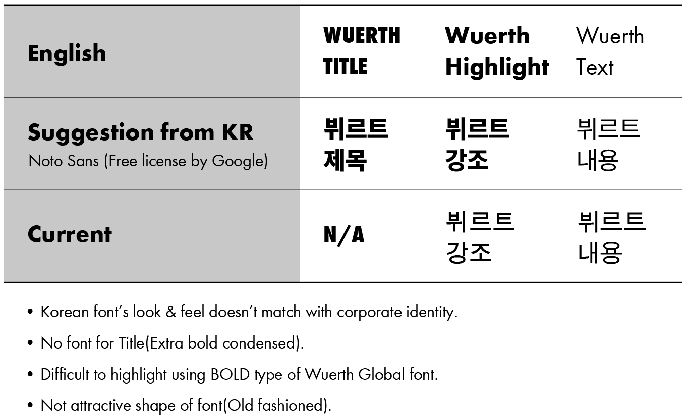
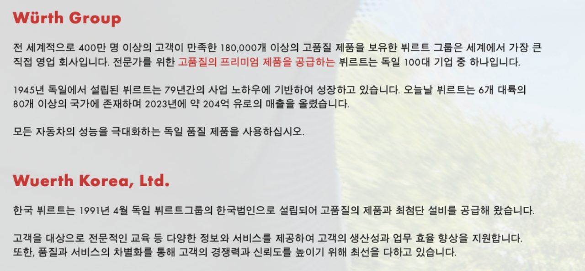
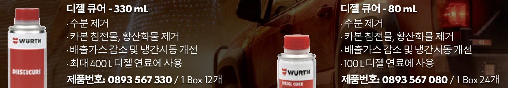

글로벌 브랜드의 한글은 누가 지키나
2024년 3월에 한국뷔르트에 입사해 보니, 그룹 서체에는 '계획된' 한글이 없었다. 브로슈어든 라벨이든 카탈로그든 한글이 들어갈 자리는 전부 돋움이 대신 채우고 있었다.
독일 본사 담당자들은 한글을 읽지 못하니, 한글 자리가 비어 있다는 걸 스스로 알아챌 방법이 없다. 결국 한국에서 누군가 말을 꺼내야 하는 일이었다.
서체에 먼저 눈이 간다
시각디자인을 전공했기 때문일까? 어느 곳에 가든 서체에는 늘 눈이 먼저 간다. 누군가에게는 사소해 보이는 글자 모양에도 브랜드의 정체성이 담긴다고 믿기 때문이다. 서체 디자이너로 15년 가까이 일하고 있는 친한 친구와는 지금도 글자와 브랜드 정체성 이야기를 자주 나눈다.
서체를 고르는 기준은 동부대우전자에서 처음 배웠다. TV GUI에 쓸 서체를 고르면서 선배 디자이너와 아이덴티티를 고민하던 때였는데, 그때 Noto Sans의 장점을 들었다. 여러 언어를 지원하고, 언어가 바뀌어도 인상이 같고, 튀지 않는 기본형이라는 것이다. 브랜드에 맞춰 설계된 한글이 없을 때 정체성을 해치지 않는 가장 안전한 선택이라는 뜻이었다.
가이스트리히코리아에서도 영문 서체 Kievit에 맞는 한글이 없어서 같은 기준으로 Noto Sans KR을 썼다. 한글 로고타입과 서체 가이드라인을 처음 만든 것도 그때다.
회사 밖에서도 비슷한 장면을 자주 봤다. 글로벌 럭셔리 브랜드가 한국 시장용으로 만든 소셜미디어 광고를 보면, 화려한 비주얼 위에 브랜드와 전혀 안 어울리는 기본형 한글이 사용되곤 했다. 전공자 동료들 사이에서는 '이게 패기고 배짱이다'라고 우스갯소리를 하지만, 그 한 줄 때문에 공들인 아이덴티티가 흐려지는 것이라고 본다. 무신경한 돋움은 같은 일이 우리 회사 안에서도 벌어지고 있다는 뜻이었겠다.
표 한 장
본사의 동료들은 한글의 미감을 판단할 수 없기에 '한글 서체가 못생겼다'고 말해 봐야 돌아올 답이 없다. 대신 자기들이 만든 체계에 빈칸이 있다고 제보하면 바로 대응한다.
그래서 영문 서체의 세 역할(Title, Highlight, Text)을 기준으로 잡고, 지금의 한글이 각 역할을 해내는지 표 한 장으로 비교했다. 진단은 네 줄로 정리했다. 한글 서체의 인상이 CI와 맞지 않고, 제목용(Extra bold condensed) 한글이 아예 없고, 굵기 단계가 부족해 글자만으로는 강조가 안 되고, 오래전에 개발된 서체라 글자 모양이 낡아 보인다는 것이었다. (무려 90년대에 만들어진 그 시스템 서체다!)

같은 표에 대안도 넣었다. 입사하고 나서 한글만이라도 먼저 바꿔 쓰고 있던 무료 서체 Noto Sans로 제목·강조·본문을 채운 예시였다. 물론 이 서체가 정답은 아니겠으나, 당장의 지출 없이 빠르게 도입할 수 있다는 점은 지금의 상황에 알맞은 처방이라는 판단이었다.
Noto Sans 서체를 사용하더라도 해결할 수 없이 매일 발생하는 비용이 있었는데, 영문과 국문 서체가 다르다 보니 홍보물을 만들 때마다 국문만 골라내 서체를 바꾸고 글자 간격을 다시 맞춰야 했다. 마컴 제작물을 혼자 만드는 처지에서는 매번 되풀이되는 손실이었다.
전문가를 상대하는 B2B라고 해서 서체를 덜 보는 건 아니다. 우리 제품은 수입품이라 국내 경쟁사보다 비싼데, 그 값을 납득시키는 데는 매체의 완성도가 한몫한다고 본다. 서체를 포함한 오밀조밀한 단단함이 전체적인 완성도를 좌우할 수 있다고 생각한다.
임시 기준
2025년 3월 31일에 이 표를 독일 본사 International Marketing & Brand Communication 팀에 보냈고, '2026년 중반에 새 서체를 배포할 예정'이라는 답을 받았다. 해결은 약속받았지만 1년 넘게 기다려야 한다는 뜻이기도 했다.
그동안에도 브로슈어와 광고물은 계속 만들어야 하니, 새 서체가 나올 때까지 한글은 Noto Sans로 임시 통일하자고 같은 그룹의 국내 법인들에 제안했다. 뷔르트인더스트리는 공감하고 함께 맞췄고, 뷔르트일렉트로닉스는 소속 사업 라인이 달라 원래 그룹 기준 서체를 쓰지 않았기 때문에 보탤 의견이 없다고 하더라.
다른 법인의 공감을 얻는 것까지가 내가 할 수 있는 범위였고, 기준을 강제할 권한도 필요도 없었다. 다행히 그룹 서체를 쓰는 국내 두 법인은 같은 임시 기준을 쓰게 됐다.
검수는 등급을 나눠서
2026년 2월에 본사에서 새 서체의 테스트 드래프트를 보내면서 한글 자형 검수를 요청해 왔다. 본사 담당자들은 한글을 모르니, 무엇이 틀렸는지 판단해 줄 사람이 한국에 필요했던 것이다.
1차 검수에서는 실제 제품명 '뷔르트 브레이크/파트 클리너'와 모음·받침 조합이 까다로운 문장을 가는 글자와 굵은 글자로 나란히 놓고 봤다. 지적 사항은 두 등급으로 나눴다. 반드시 고쳐야 할 치명적인 오류(글자 형태 등)와, 고치면 더 좋아 보일 부분(획 끝이 너무 긴 곳, 위치가 낮은 글자, 획이 몰려 답답한 자리)이다.
검수 의견서는 개발 중인 서체가 담겨 있어서 여기에 싣지 않았다.
등급을 나눈 데는 이유가 있다. 독일 본사 담당자는 한글을 모르고, 폰트 개발사의 프로젝트 책임자는 우선순위를 모른다. '여기가 좀 이상하다'고만 의견을 주면 무엇이 '필수'이고 무엇이 '권장'인지 그쪽에서는 정할 수가 없으니, 한글을 읽을 수 있는 쪽에서 정해 줘야 했다.
2차 검수(2026년 8월)는 서체 파일로 받은 네 가지 굵기(Book, Demi Bold, Black, Black Condensed) 전체를 봤다. 문장 샘플에 더해 한글 음절표와 기호까지 훑었는데, 원문자 '㉠'이 Demi Bold에서만 모양이 틀어져 있었다. 다른 굵기에서는 멀쩡해서, 한 굵기만 봤다면 그냥 지나쳤을 오류다.
수정 사항은 내가 추려서 개발사에 교정을 지시했고, 내 역할은 거기까지였다. 한국 법인 담당자 입장이라 개발사를 고르거나 비용을 정하는 일에는 끼지 않았다.
정식 버전
1·2차 검수에서 지적한 사항은 정식 버전에 모두 반영됐고, 이후에 발견되는 문제도 우선 반영하겠다는 답을 받았다. 새 그룹 서체 Wuerth Sans Global을 한국뷔르트의 모든 매체에 적용한 뒤로는, 임시로 쓰던 Noto Sans와 이전 그룹 서체 Wuerth Global을 더는 쓰지 않는다.


문제를 제기하고 배포되기까지 1년 반이 걸렸고, 그 긴 시간을 임시 기준으로 버텼다.
돌아보면
Noto Sans는 세 회사에서 이어 쓴 기준이다. 동부대우전자에서 배운 걸 가이스트리히코리아에서 썼고, 한국뷔르트에서는 임시 기준이 됐다. 그렇다고 기본형이 정답이라는 얘기는 아니다. 가이스트리히코리아에서는 거기까지가 할 수 있는 일이었고, 이번에는 본사 글로벌 서체에 들어가는 한글의 개발 검수에 관여했다.
가이스트리히코리아에서 제품명 한글 로고타입을 따로 설계한 이야기는 의사는 읽고 환자는 읽지 못하는 이름에 있다.
글로벌 그룹의 브랜드 시스템은 본사가 만들지만, 그게 한글로 제대로 작동하는지는 본사가 알 수 없다. 서체 말고 다른 본사 자산도 아마 그럴 것이다.
그리고 무엇보다, 이제 한 서체로 국문과 영문을 함께 만들 수 있어서 너무 편해졌다!